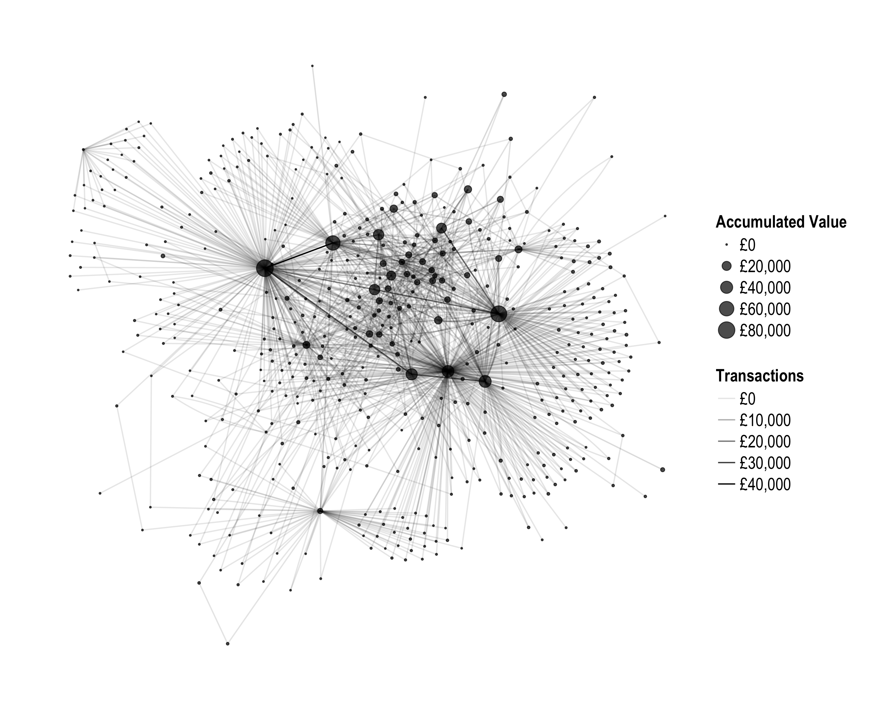

The Estate of Jan della Faille de Oude, 1582–1617

The Estate of Jan della Faille de Oude
As Jan della Faille de Oude lay in sick in bed on the 21st of October, 1582, he dictated his last will and testament to a notary from Antwerp. Though born into a peasant family in the Flemish village of Wevelgem, by the time that Jan de Oude, or Jan the Elder, made his testament, he had risen to become one of the wealthiest merchants in Europe. Through his testament, he sought to direct the manner by which his vast capital would fall to his nine adult children and heirs. According to the laws of Antwerp, Jan de Oude’s estate had to be equally divided among his nine children, which meant that dealing with the estate was first and foremost an issue of accounting.1
The spectacular accumulation of wealth by merchants such as Jan de Oude notwithstanding, inheritance remained the primary means for the transfer and acquisition of capital in early modern Europe. The devolution of property and authority that occurred at the death of a parent tested the bonds of siblings. This was especially the case for the estate of a merchant such as Jan de Oude, whose estate consisted almost entirely of mercantile capital spread throughout Europe. This made the devolution of property a matter of business and accounting acumen. Even in the best circumstances, it could be years before an estate was fully divided among the heirs, leaving the administration of the capital in the hands of the executors of the testament. Almost as soon as Jan de Oude was buried next to his wife, the three sons Jan de Oude chose to act as executors began to disagree with each other and with their other siblings. The siblings continued to argue over the inheritance until the very end of their lives. Only in 1615 — 32 years after their father’s death — did all of the heirs submit themselves to a final arbitration in Antwerp, agreeing that the goods of the estate should be liquidated and disbursed.
The Sources
The disagreements between the children of Jan de Oude led to the creation of a plethora of documents that make it possible to follow both the arguments between the siblings and the financial aspects of the estate. This project concentrates on the latter aspect of the inheritance of the Della Faille siblings. It uses the R programming language to analyze the accounts of the estate contained in two large ledgers made in 1583 and 1594. The ledgers used double-entry bookkeeping to keep track of the accounts and recorded values in terms of the Flemish pound. The first account book of the estate recorded transactions from the date of Jan de Oude’s death on 8 November 1583 until 26 December 1583. The second book follows the estate from the end of the first book until the end of 1594. The books show that the estate of Jan de Oude had a value of over £82,000 Flemish at the time of his death in a period in which a skilled laborer might expect a yearly wage of £45 Flemish. In all, the two ledgers record over 2,100 transactions between 480 separate accounts.
Methodology
This digital humanities project uses R to better understand the nature of the estate of Jan de Oude and the means by which the heirs received their inheritance over a twelve year period. The complexity of the accounts of the estate make a digital approach to analyzing the estate particularly useful. The first step for this project was data entry of the 2,100 transactions from the two books. The data entry process resulted in the creation of two tables that were structured to work with network analysis. The first lists the accounts in the books of the estate along with information pertinent to that account. The second table contains the transactions between accounts. Following the language of double-entry bookkeeping, accounts that received a value are in debt to the account that sent the value. Values of the transactions were recorded in money of account system of Flemish pounds, shillings, and pence.
Analysis of early modern double-entry bookkeeping with modern statistical software creates specific challenges. In particular, the use the non-decimal monetary system of pounds, shillings, and pence makes even simple addition and subtraction non-trivial. Therefore, before any statistical analysis or visualization could be done, it was necessary to write R functions that could deal with a non-decimal monetary system. These functions have been expanded into a separate project, leading to the creation of the debkeepr package to analyze non-decimal currencies that are in the form of pounds, shillings, and pence.
In addition to the creation of tools to deal with the monetary system of pre-modern Europe, this project uses network analysis and financial tools provided by R to visualize the estate and the inheritance of the Della Faille siblings. The network graph of the estate at the top of this page provides an example of the possibilities. It shows the total value of the 480 accounts found in the ledgers, as well as the total value of the transactions between the accounts. Work is underway on building a website dedicated to the analysis of the estate of Jan de Oude and the inheritance of the Della Faille siblings.
The contents of this project are under active development. You can check out the GitHub page to see the progress. Feedback on the project is welcome. I can be reached via email, Twitter, or through an issue on GitHub.
Footnotes
For a complete discussion of Jan de Oude’s background and trade see Wilfrid Brulez, De Firma Della Faille en de internationale handel van Vlaamse firma’s in de 16e eeuw (Brussels: Paleis der Academièen, 1959).↩︎